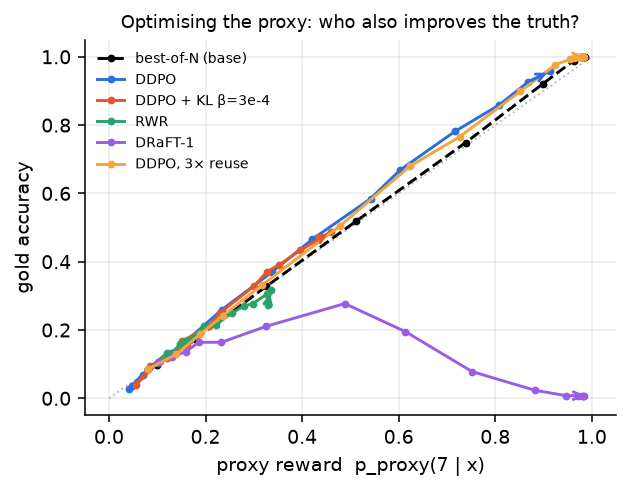
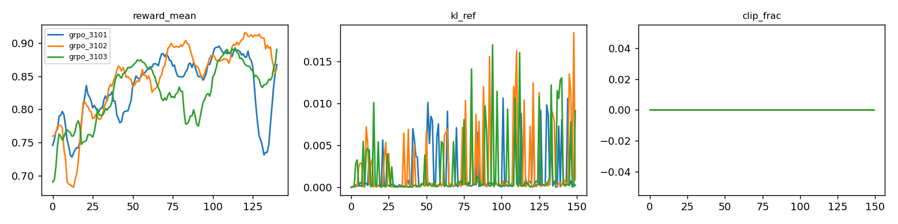

RL for Diffusion Models: What Works, and What Gets Hacked. A Worklog
In this post I fine-tune diffusion models with reinforcement learning, one experiment at a time, on a single 16 GB MacBook.All code, protocols, per-sample metrics and analysis scripts are on GitHub. Apple M3, MPS backend, no cloud. The goal is not a state-of-the-art model. It is to find out, under controlled conditions, when RL actually improves a diffusion model and when it just games the reward.
The trick that makes this measurable: every experiment has two judges. The model is trained against a reward, and scored by an independent evaluator the optimiser never sees. If the reward goes up and the evaluator doesn't, the model has been hacking the reward.
Here's every experiment, in the order I ran them:
| Experiment | Reward | Evaluator (truth) | Verdict |
|---|---|---|---|
| 1: MNIST, DDPO | 0.08 → 0.91 | 9% → 96% | works |
| 1: MNIST, DRaFT | 0.08 → 0.99 | 9% → 0.7% | hacked |
| 2: Video, any legible digit | 0.61 → 0.92 | +11.7 pts, mostly 8s | shortcut |
| 3: Video, requested digit | 0.78 → 0.91 | 49% → 82% | works |
| 4: Proteins, RFdiffusion3 | ±0.000 | ±0.000 | no headroom |
| 5: Images, CIFAR-10 | +0.056 | +0.009 | hacked |
| 6: Text-to-video, ZeroScope | n/a | n/a | fits in memory |
Denoising as an RL problem
A DDIM sampler with η = 1 is a chain of Gaussian transitions. Read each transition as an action, and the sampler becomes a policy:
π_θ(x_t' | x_t) = N( μ_θ(x_t, t), σ_t² I ) state = (x_t, t) action = x_t' reward = r(x̂₀), only at the end
The image likelihood is intractable, but each step's log-probability is exact and cheap. That's all a policy gradient needs.These are densities of the sampler's transitions, not likelihoods of the final sample. The distinction matters when people talk about "the likelihood ratio" in diffusion RL. Because the policy and the frozen reference share σt, the per-step KL is closed-form, and summing it gives a path KL that upper-bounds the KL between final images.
GRPO samples a group of outputs per prompt, normalises each reward against its group, and takes clipped steps anchored by a KL penalty:
A_i = (r_i − mean(r_group)) / std(r_group)
L = − E[ min(ρ·A, clip(ρ, 1±ε)·A) ] + β · KL(π_θ ‖ π_ref)
ρ = π_θ(x_{k+1} | x_k) / π_old(x_{k+1} | x_k)
Experiment 1: Which algorithm can you trust?
You can't study reward hacking on Stable Diffusion with an aesthetic predictor: there's no ground truth. So I built a toy with one. Task: turn an unconditional MNIST generator into a 7 generator, using only a deliberately weak reward model.
- Base model: 1.5M-param UNet DDPM. About 9% of its samples are 7s.
- Reward (proxy): an MLP trained on just 1,000 labels (89.9% accurate). r = p(7|x).
- Evaluator (gold): a CNN on all 60k labels with augmentation (99.2%).
I compared DDPO (policy gradient), reward-weighted regression (RWR), DRaFT (back-propagate the reward through the sampler) and best-of-N (no training).All methods share the base model, a 20-step sampler, 64 trajectories per epoch, AdamW at 1e-5, and the same 256 fixed evaluation seeds.

| Method (150 epochs) | proxy p(7) | gold acc | FD → 7s ↓ | diversity | path-KL |
|---|---|---|---|---|---|
| Pretrained | 0.081 | 0.086 | 20.85 | 5.71 | 0 |
| DDPO, 3 seeds | 0.914 | 0.958 | 0.96 | 1.85 | 76 |
| DDPO + KL β=3e-4 | 0.460 | 0.488 | 8.93 | 4.49 | 7 |
| RWR | 0.336 | 0.316 | 32.26 | 3.93 | 697 |
| DRaFT-1, 3 seeds | 0.988 | 0.007 | 49.7 | 1.81 | 6,500 |
| Oracle: DDPO on gold | 0.825 | 0.914 | 1.62 | 2.31 | 68 |
| Best-of-64 | 0.962 | 0.989 | – | – | 3.2 exact |


Why DRaFT gets hacked
DDPO's update is a weighted average over the model's own samples: it can only shift probability toward images the model already makes, and on those the proxy is roughly right. DRaFT's update is ∇xr, which asks the reward model which pixel direction raises the score. For an MLP that's an adversarial perturbation. DRaFT is an adversarial attack on the reward model, baked into the generator's weights.Control: DRaFT against the strong gold CNN gives mostly recognisable 7s, but still with ghost overlays and 3,560 nats of path-KL. A robust reward model helps; it doesn't make gradient fine-tuning safe.
Reward shaping comes first
My first DDPO run used r = log p(7|x). It produced blobs: 0% real 7s. Changing only the reward to p(7|x) gave 96%.

The cause is advantage normalisation. With 9% 7s per batch, most of the variance in log p comes from the 91% that aren't 7s, and among those, more ink scores slightly higher. The normalised gradient follows ink. With bounded p, non-7s all score about 0, so the gradient comes from the 7s. A monotone transform leaves the optimum unchanged but changes which optimum you reach.

The price of staying close, and best-of-N

Best-of-64 reaches 99% gold accuracy at 3.2 nats of exact KL. RL reaches the same accuracy at 20–165 nats of path-KL.Part of the gap is measurement: path-KL is an upper bound, and a random-reward control drifts 65 nats on its own. Same conclusion as Gao et al. for language models. If inference compute is cheap, best-of-N is hard to beat. RL earns its place by building the search into the weights: here, 64× cheaper sampling.
Sample reuse, and a clip that never clips
Three passes per batch reach 98% gold accuracy after 2,880 trajectories, against about 9,600 with one. But the PPO clip never fires: DDPO averages each step's log-prob over pixels, which shrinks |ρ − 1| to about 2e-4. The gain is just extra gradient steps. This is also why the official DDPO config uses ε = 1e-4.
Black-box rewards
DDPO doesn't need a gradient, so it can optimise JPEG file size. Rewarding incompressibility gives thick, rough strokes. Rewarding compressibility finds the degenerate optimum: digits fade to solid black. The reward is satisfied exactly, and the output is useless.

Gotchas that took most of the time
- The last denoising step dominates. Its σ ≈ 0.006, so its score term is ~100× larger than early steps. Ending the stochastic chain early fixed gradient variance and the KL estimate.
- Run a null-reward control. Random advantages still drift 65 nats. Read every KL against that floor.
- Keep x̂₀ clipping. Removing it took FD from 1.3 to 149.
- Learning rate controls hacking. 3e-5 instead of 1e-5 sent DDPO straight to blobs.
Experiment 2: GRPO on video finds a shortcut
Next, a real generative task. I trained a video diffusion model from scratch: a 1.7M-parameter factorised space-time UNet on Moving-MNIST (8 frames, 32×32, one digit sliding in one of eight directions). It was conditioned on direction only.
The GRPO reward paid for correct motion and "a legible digit". The independent success rate rose by 11.7 points. But GRPO got there by drawing 8s: 109–150 of 256 test clips, against 64 before training. A loopy, high-contrast 8 is the easiest thing to call legible. Without the 8s, the gain was 0–5 points.
If the reward has a shortcut, GRPO finds it.
Experiment 3: Closing the shortcut, +32 points
The fix was to change what the reward pays for. The model now takes a (direction, digit) prompt, like "a 3 moving down-left", and the reward pays only for that digit. Drawing an 8 when asked for a 3 now costs reward.
- Pretraining: 12,000 steps, about 3 hours. A predeclared gate required ≥40% correct digits before any RL. It scored 36% at 8k steps, so I extended training and it passed at 47.5%.Every change is recorded as an amendment in the study's
PROTOCOL.json, written before training. - Reward: 0.4 × p(requested digit) + 0.6 × motion score, times an ink guard that zeroes blank clips.
- Evaluator: a different CNN trained on the other half of MNIST, plus phase-correlation motion.
- Training: 150 GRPO updates, 4 prompts × 8 samples, 3 seeds, about an hour each.
- Test: 320 clips with identical starting noise for every method.
| Method | Sampling cost | Success | Δ vs pretrained (95% CI) | Worst digit |
|---|---|---|---|---|
| Pretrained | 1× | 49.1% | – | 34% |
| GRPO, seed 1 | 1× | 75.9% | +26.9 (21.6, 32.2) | 53% |
| GRPO, seed 2 | 1× | 84.1% | +35.0 (29.7, 40.6) | 69% |
| GRPO, seed 3 | 1× | 84.4% | +35.3 (29.7, 40.9) | 72% |
| GRPO, pooled | 1× | 81.5% | +32.4 (27.7, 37.3) | – |
| Best-of-4 | 4× | 82.8% | +33.8 (28.1, 39.4) | 56% |
| Guidance w=2 | 2× | 85.6% | +36.6 (30.9, 42.2) | 75% |
All three seeds improved by 27–35 points. GRPO matches best-of-4 at a quarter of the sampling cost. Motion was already perfect, so the whole gain is in drawing the right digit.

And no shortcut this time. Every digit improved; the weakest went from 34% to 53–72%. The pretrained model had its own 8 bias (68 clips read as 8 when 32 were requested). After GRPO: 28, 38 and 31. GRPO removed the bias instead of exploiting it.


The cost: within-prompt diversity fell from 0.47 to 0.37–0.41, as is usual for KL-regularised RL. KL to the reference stayed below 0.02, and the ratio never reached the clip, so the KL anchor did the regularising.

Experiment 4: RFdiffusion3 doesn't move
Then proteins. I fine-tuned the real RFdiffusion3 checkpoint (168M parameters, frozen) through a small low-rank adapter on its final coordinate-update layer. The policy was a stochastic version of RFD3's own sampler; the reward favoured compact, well-bonded, clash-free backbones.
First study: three GRPO seeds plus three controls, tested on 288 fresh backbones. Every change was within ±0.001 of zero. My guess was that actions moved only the Cα atoms, and the frozen denoiser pulled each residue back. So I let actions move every atom, raised the learning rate, and focused on low noise levels:
| Seed | Actions on | Reward change | 95% CI |
|---|---|---|---|
| 11 | Cα only, lr 3e-3 | +0.0005 | (−0.0001, +0.0014) |
| 21 | all atoms, lr 1e-3 | +0.0006 | (−0.0001, +0.0013) |
| 22 | all atoms, lr 1e-3 | −0.0000 | (−0.0008, +0.0006) |

Still nothing.A separate benchmark refilling an 8-residue gap in crambin (PDB 1CRN) gave the same answer: a mean paired change of 0.00002 Å RMSD to native. RFdiffusion3 already satisfies a geometric reward, so every group has almost no reward variance to learn from. RL needs headroom. Moving it will need a reward the base model doesn't already meet, like binding or designability.
Experiment 5: CIFAR-10 hacks the classifier
On Google's pretrained CIFAR-10 DDPM, I used GRPO to make images more frog-like. The reward was one classifier's frog probability; the evaluator was a second classifier trained on disjoint data.
- Reward classifier: +0.056
- Independent classifier: +0.009
The reward rose six times more than the truth. GRPO learned what that classifier responds to, not what a frog looks like. The reward model sets the ceiling.

Experiment 6: A real text-to-video model
Finally, a feasibility check on ZeroScope, a pretrained text-to-video model. With the U-Net frozen and a small output residual trained on eight frames, one GRPO update fits in 16 GB. That's all this shows. It's not a result, and scaling it needs more memory than this laptop has.
Conclusion
Across five diffusion models, RL always optimised the reward. Whether that became real improvement came down to two things:
- Does the algorithm learn from its own samples? DDPO and GRPO do; DRaFT follows the reward gradient and attacks the reward model.
- Does the reward pay for exactly the target? Ink, 8s and classifier quirks were all shortcuts RL found.
When both hold, it delivers: +32 points on video, every class improved, at 1× sampling cost. What I'd carry to a real system:
- Prefer on-policy methods (DDPO, GRPO) when the reward is a learned model.
- Always keep an evaluator the optimiser never sees.
- Condition the reward on the prompt, so collapsing onto an easy mode costs reward.
- Treat reward shaping as a hyperparameter.
- Compare against best-of-N and guidance at matched inference cost, and report KL against a null-reward control.
Next up: RFdiffusion3 with a binding or designability reward, GRPO combined with guidance on video, Diffusion-DPO in the same harness, and the proxy-vs-gold protocol on Stable Diffusion with LoRA.
Further resources and references
- Black et al., Training Diffusion Models with Reinforcement Learning (DDPO)
- Fan et al., DPOK: RL fine-tuning of text-to-image diffusion models with a KL penalty
- Clark et al., Directly Fine-Tuning Diffusion Models on Differentiable Rewards (DRaFT)
- Prabhudesai et al., AlignProp: reward back-propagation for text-to-image diffusion
- Shao et al., DeepSeekMath (introduces GRPO)
- Gao et al., Scaling Laws for Reward Model Overoptimization